CS184/284A Spring 2025 Homework 2: MeshEdit
Overview
This project was all about building up geometric modeling tools from scratch. I started with Bezier curves and surfaces using de Casteljau's algorithm, which boils down to doing linear interpolation over and over until you're left with a single point on the curve. Then I moved on to working with triangle meshes through the half-edge data structure, implementing Phong shading, edge flips, edge splits, and finally Loop subdivision to turn coarse meshes into smooth ones.
The coolest part was seeing how the low-level half-edge pointer work in edge flip and split feeds directly into the Loop subdivision algorithm. Getting all those pointers right was honestly pretty painful — I had to draw tons of diagrams to keep track of everything. I also thought it was really interesting how something as simple as the direction of a diagonal on a cube face can totally break the symmetry of subdivision. Pre-splitting edges to fix that was a neat trick.
Section I: Bezier Curves and Surfaces
Part 1: Bezier Curves with 1D de Casteljau Subdivision
De Casteljau's algorithm evaluates a point on a Bezier curve by doing repeated linear interpolation.
Given \( n \) control points and a parameter \( t \), each step produces \( n-1 \) new points:
\[ p_i' = (1-t) \cdot p_i + t \cdot p_{i+1} \]
You keep going until there's just one point left, and that point sits on the curve at parameter \( t \).
My BezierCurve::evaluateStep() function does exactly one level of this — it takes
in a vector of 2D points, interpolates between each consecutive pair using the class member \( t \),
and returns the resulting smaller vector.
Here's a custom 6-point Bezier curve I made (from bzc/curve3.bzc), showing each step
of de Casteljau from the original control points all the way down to the final point on the curve.
|
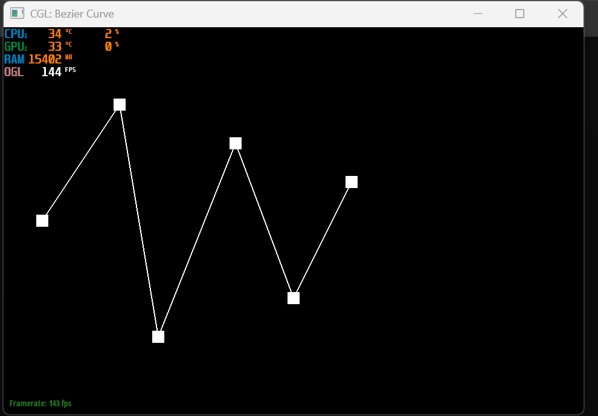 |
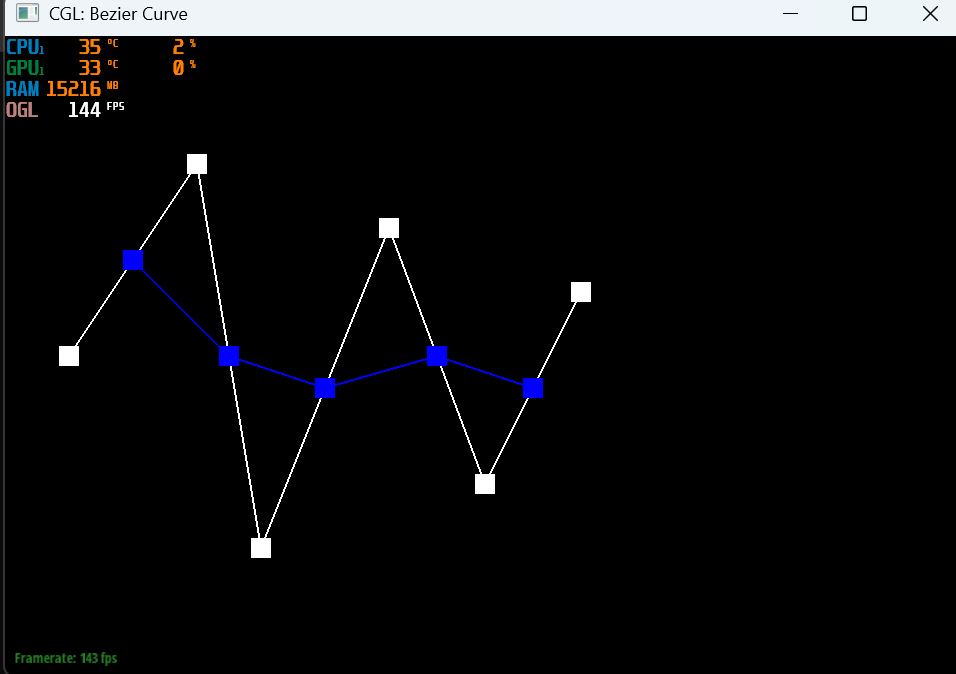 |
|
|
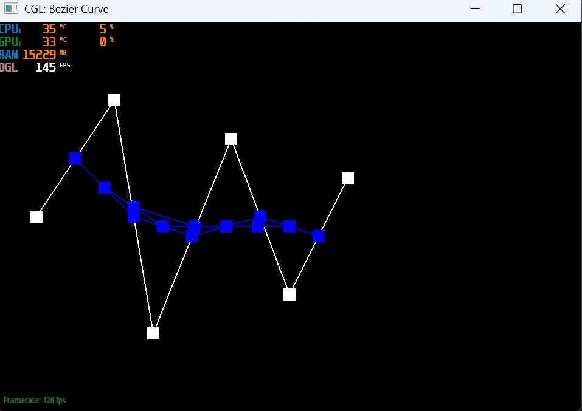 |
|
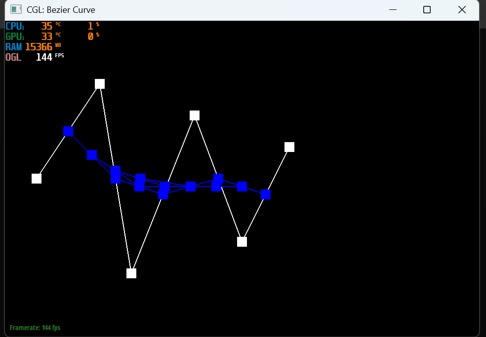 |
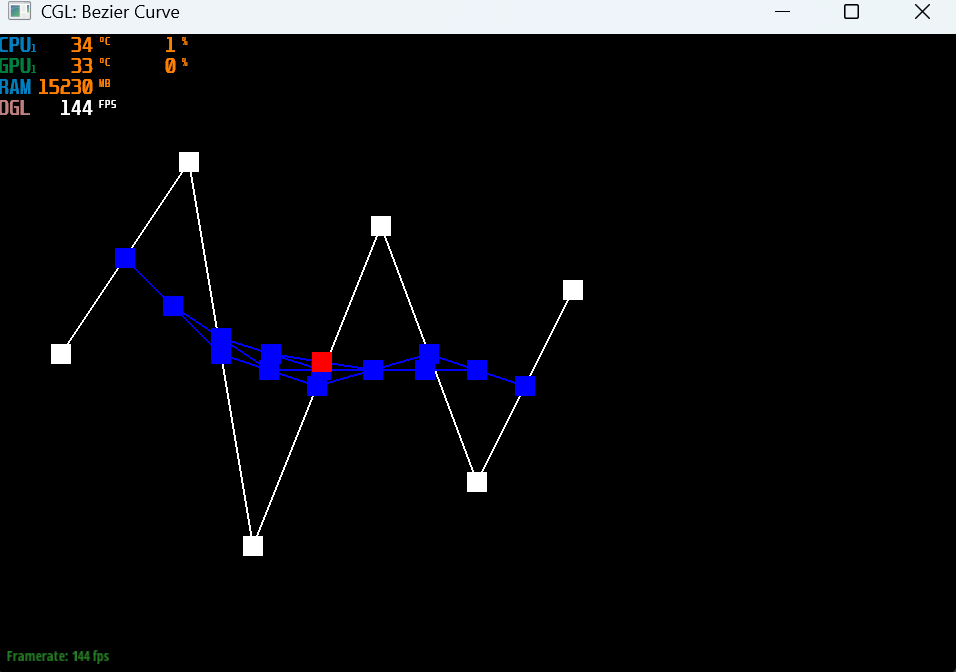 |
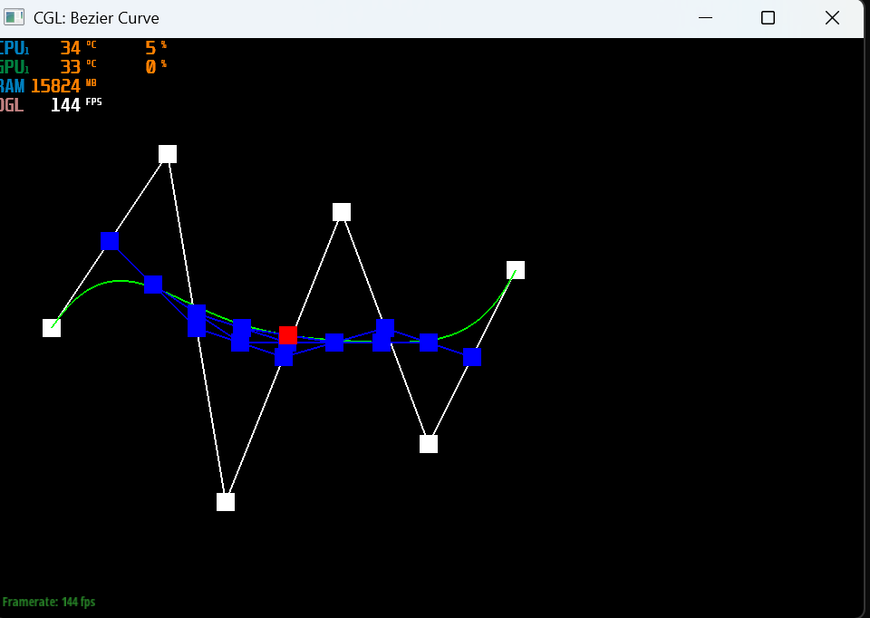
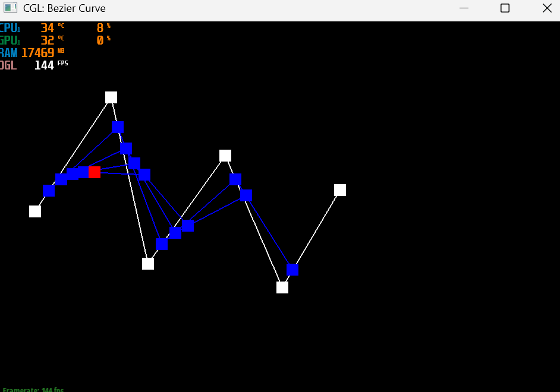
Part 2: Bezier Surfaces with Separable 1D de Casteljau
Bezier surfaces work by applying de Casteljau in two directions. Given an \( n \times n \) grid of control points and parameters \( (u, v) \), you first run de Casteljau along each row at parameter \( u \), which gives you \( n \) intermediate points (one from each row). Those points form a new Bezier curve, which you then evaluate at parameter \( v \) to get the final point on the surface.
The code is split into three functions: evaluateStep() does one round of interpolation
on 3D points (same idea as Part 1 but with Vector3D and \( t \) passed as an argument),
evaluate1D() calls evaluateStep() in a loop until one point is left, and
evaluate() ties it together by running evaluate1D() on each row at \( u \)
and then once more on the results at \( v \).
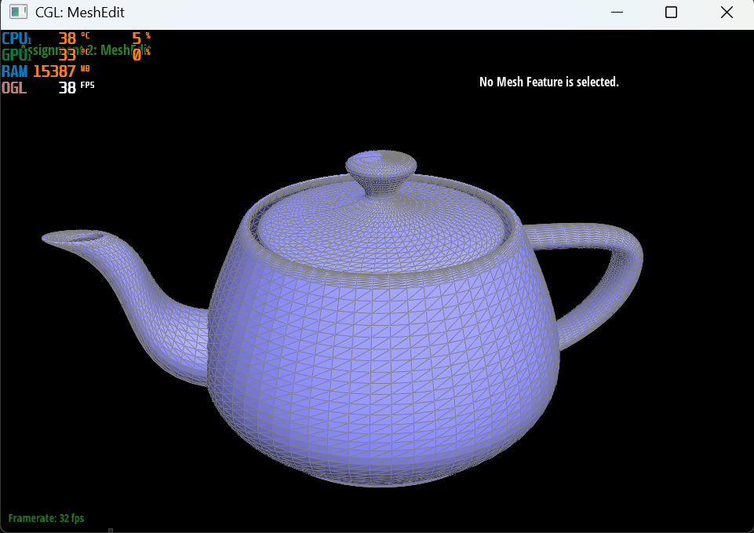
Section II: Triangle Meshes and Half-Edge Data Structure
Part 3: Area-Weighted Vertex Normals
To get smooth Phong shading, each vertex needs a normal that's a weighted average of the normals
of its surrounding faces. I walk around the one-ring neighborhood using the half-edge traversal
pattern h = h->twin()->next(), which hops across each adjacent face in turn.
For each non-boundary face, I grab the triangle's three vertices and compute
cross(p1 - p0, p2 - p0). The nice thing about the cross product is that its magnitude
is twice the triangle area, so bigger triangles automatically contribute more to the normal without
needing any extra area calculation. After summing up all the cross products, I just normalize the
result. This makes the shading look much smoother compared to flat shading.
|
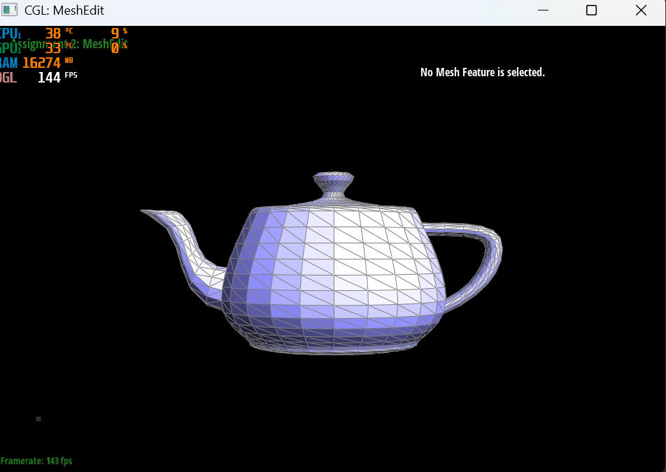 |
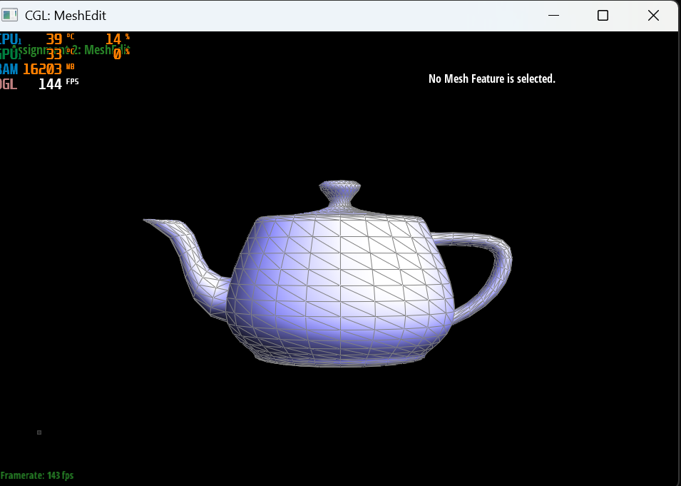 |
Part 4: Edge Flip
Edge flip takes an edge shared by two triangles and rotates it to connect the other pair of vertices. For edge \( (b,c) \) between triangles \( (a,b,c) \) and \( (c,b,d) \), flipping it gives you \( (a,d,b) \) and \( (a,d,c) \) instead. No new elements are created — it's purely a pointer reassignment operation that returns early for boundary edges.
I started by collecting all 6 half-edges, 4 vertices, and 2 faces, then used setNeighbors()
to rewire everything. The key realization was that only h0 and h3 (the half-edges on the flipped edge)
actually change their vertex — h0 goes from \( b \rightarrow c \) to \( a \rightarrow d \), and
h3 goes from \( c \rightarrow b \) to \( d \rightarrow a \). The four outer half-edges keep their
vertex, twin, and edge pointers; only their next and face pointers change.
Debugging journey: This took a while to debug because the bug was so subtle. My first version also changed the vertex pointers of the outer half-edges (h1, h2, h4, h5), which broke their twin relationships with half-edges outside the two triangles. For example, changing h4's vertex from \( b \) to \( d \) meant h4 and its twin would disagree about which edge they belonged to. A single flip looked fine, but the corrupted pointers caused crashes during loop subdivision later on. The fix was simple once I understood it: only touch h0 and h3's vertices.

|
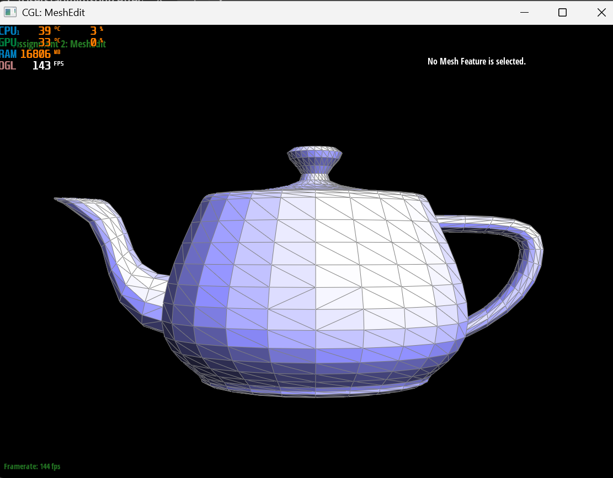 |
Part 5: Edge Split
Edge split inserts a new vertex \( m \) at the midpoint of an edge and divides the two adjacent triangles into four. For edge \( (b,c) \) between triangles \( (a,b,c) \) and \( (c,b,d) \), splitting places \( m \) at the midpoint and connects it to both \( a \) and \( d \), giving four triangles: \( (b,m,a) \), \( (m,c,a) \), \( (m,b,d) \), and \( (m,d,c) \).
This means creating 1 new vertex, 3 new edges (\( m\text{-}a \), \( m\text{-}d \), \( m\text{-}c \)),
2 new faces, and 6 new half-edges. The original edge \( e_0 \) gets reused for the \( b\text{-}m \)
segment. I drew before-and-after diagrams labeling every half-edge, then used setNeighbors()
to wire up all four faces with consistent CCW winding. The isNew flags are set so that
the edges connecting \( m \) to the opposing vertices (\( a \) and \( d \)) are marked new, while
the two halves of the original edge are not. The function returns early for boundary edges.
Debugging journey: The tricky part was getting h3's vertex right. Originally \( c \rightarrow b \), it needs to become \( m \rightarrow b \) after the split. An earlier version left h3 with vertex \( c \), so edge \( e_0 \) would have half-edges going from \( b \) and \( c \) instead of \( b \) and \( m \), which broke the topology. I had a similar issue with h11 needing vertex \( d \) (for \( d \rightarrow m \)) rather than \( m \). Drawing out every single half-edge on paper was the only way I could keep it all straight.
|
|
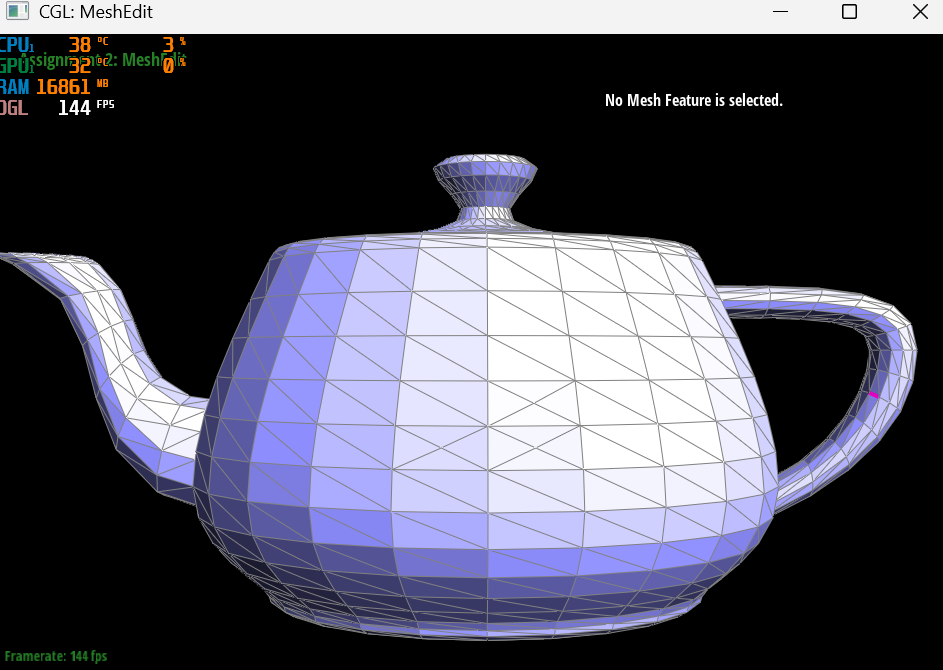 |

Part 6: Loop Subdivision for Mesh Upsampling
Loop subdivision turns a coarse triangle mesh into a smoother one. The algorithm in
MeshResampler::upsample() works in five steps:
- Reset flags: Clear all
isNewflags on vertices and edges so we start fresh. - Compute new positions for existing vertices: Each old vertex moves toward its
neighbors using the Loop formula:
\[ v_{\text{new}} = (1 - n \cdot u) \cdot v_{\text{original}} + u \cdot \sum_{\text{neighbors}} v_i \]
where \( n \) is the degree and \( u = 3/16 \) for degree 3, \( u = 3/(8n) \) otherwise.
These go into
Vertex::newPosition. - Compute positions for new vertices: For each edge between vertices \( A, B \)
with opposite vertices \( C, D \):
\[ m_{\text{new}} = \frac{3}{8}(A + B) + \frac{1}{8}(C + D) \]
Stored in
Edge::newPosition. - Split every original edge: Using a count-based loop to avoid iterator issues, split each original edge and assign the precomputed position to the new vertex.
- Flip new edges connecting old-to-new vertices to get the right 4-1 subdivision
topology, then copy all new positions into
Vertex::position.
Extra credit — boundary handling: Boundary vertices use a simpler rule: \( v_{\text{new}} = \frac{3}{4} v + \frac{1}{8}(v_{\text{left}} + v_{\text{right}}) \), where the neighbors are the two adjacent boundary vertices. Boundary edges just use the midpoint and are skipped during splitting.
How subdivision affects shape: Sharp corners and edges get rounded off because the averaging pulls each vertex toward its neighbors. Each subdivision pass smooths things out more. If you want to keep a sharp feature, you can pre-split edges near it to give the algorithm more local geometry to work with, which keeps the averaging from spreading out too far.
Teapot Subdivision

|

|

|
Cube Subdivision — Asymmetry
When you subdivide dae/cube.dae, the result comes out asymmetric. The reason is that
each cube face is split into two triangles by a single diagonal, and the vertices at the ends of
that diagonal end up with higher degree than the other two corners. Since the Loop formula treats
vertices differently based on degree, those higher-degree vertices move differently, and the
symmetry breaks.
|
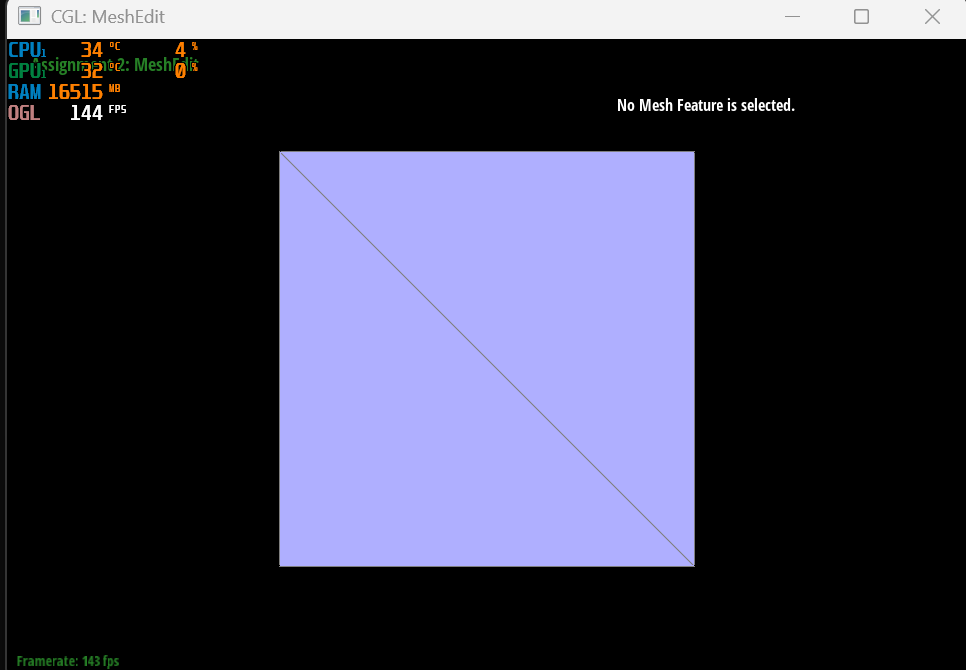 |
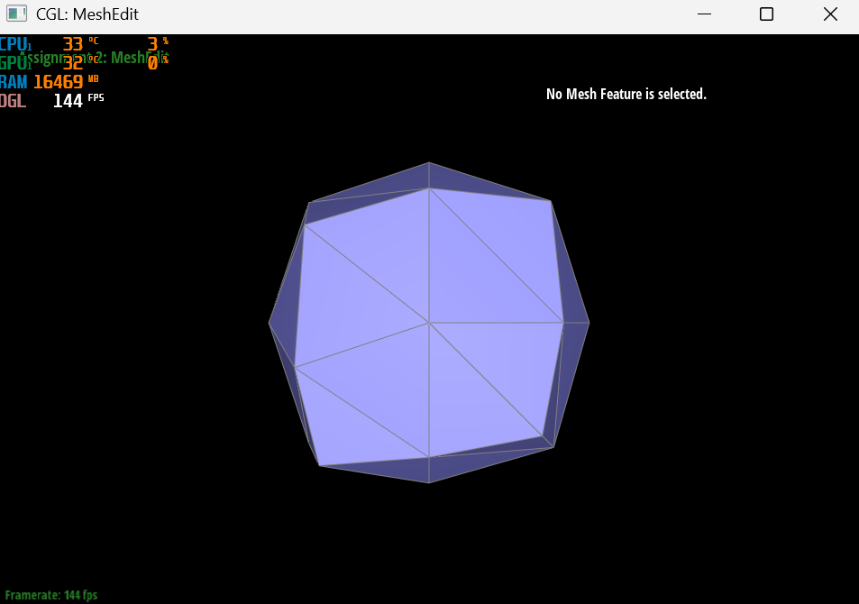 |
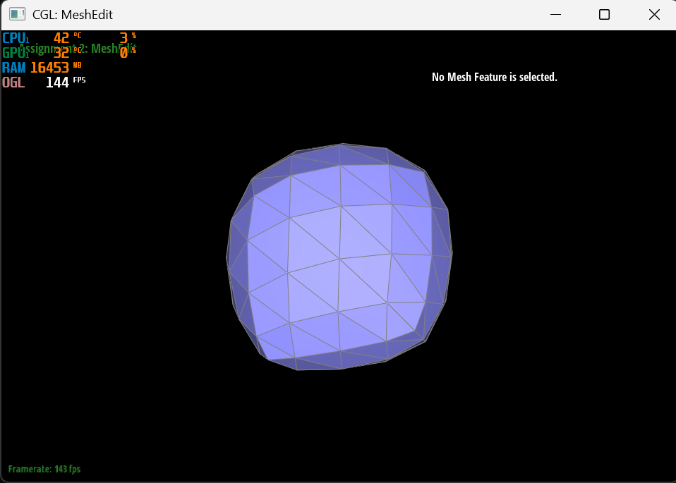 |
Cube Pre-Processing for Symmetric Subdivision
To fix this, I split the diagonal edge on each face before subdividing. This gives each face 4 triangles meeting at a center vertex, so all the original corner vertices end up with the same degree. After that, subdivision produces a perfectly symmetric shape.
|
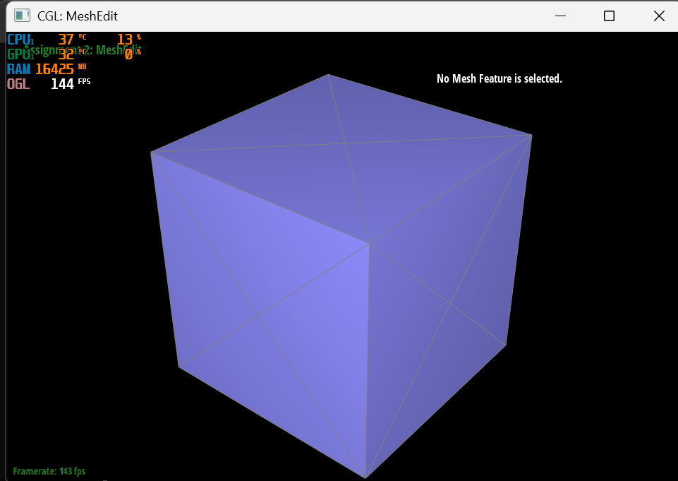 |
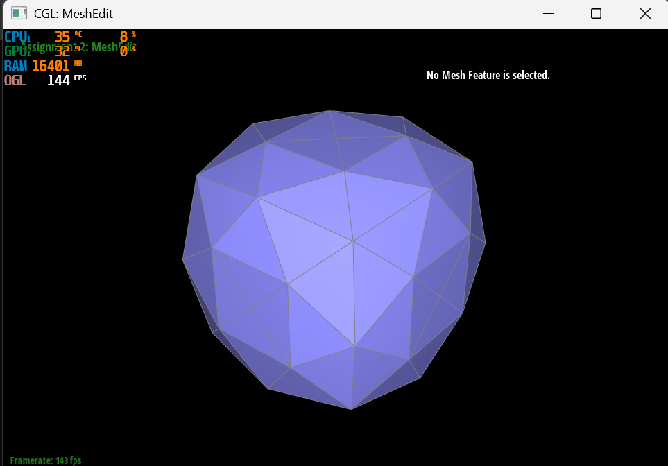 |
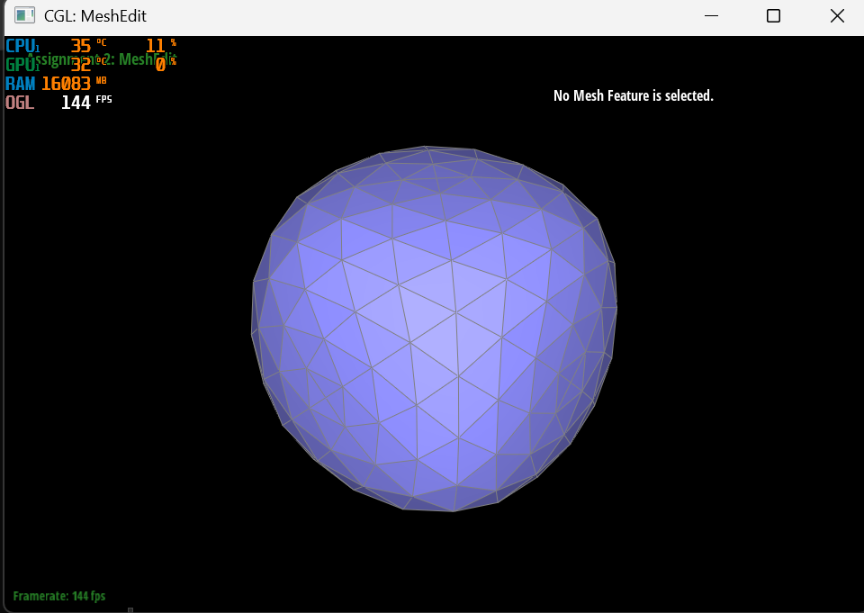 |
Debugging journey: Loop subdivision depends on both flipEdge() and
splitEdge() being correct, so bugs from earlier parts showed up here. The flip bug
(incorrectly changing outer half-edge vertices) meant the mesh looked fine after one subdivision,
but the second press of L would crash or do nothing because the corrupted twin pointers led to bad
memory access. I also had to add isNew flag resets at the start of upsample()
and guard the splitting loop against boundary edges, since splitEdge() returns a null
iterator for those and dereferencing it would crash.